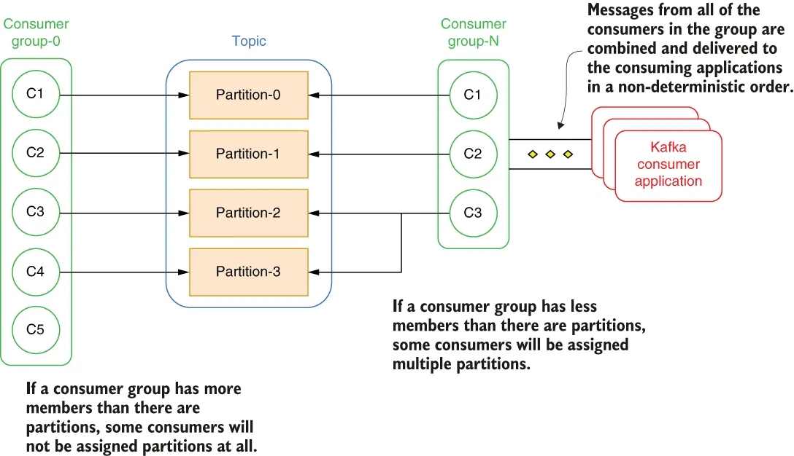

我的总结🤖：Kafka 的消费模型和分区数绑死：一个分区同一时刻只能被一个消费者消费，所以消费者组里活跃消费者的数量永远不能超过分区数。想提高消费并行度，只能加分区，而加分区要 Rebalance、搬数据，又慢又贵。
更麻烦的是，同一个 Topic 往往有多个消费需求完全不同的应用。有的要高吞吐，需要多分区；有的要严格顺序，只能单分区；有的要按 key join，需要按 key 分区。Kafka 一个 Topic 只能有一个分区数，没法同时满足，只能复制多份数据到不同 Topic，各配各的分区数。
而 Pulsar 的订阅和存储是解耦的，消费者数量不受分区数限制，同一个 Topic 可以同时支持不同消费模式。
Reading messages from a distributed messaging system is a bit different from reading them from a legacy messaging system, as distributed messaging systems were designed to support a large number of concurrent consumers. The way in which the data is consumed is driven in large part by the way it is stored inside the system itself, with both partition-centric and segment-centric systems having their own unique way of supporting pub-sub semantics for consumers.
从分布式消息系统中读取消息，与从传统消息系统中读取略有不同，因为分布式消息系统被设计为支持大量并发消费者。数据的消费方式在很大程度上取决于它在系统内部的存储方式，以分区为中心的系统和以分段为中心的系统各有其为消费者支持发布-订阅语义的独特方式。
Message consumption in Kafka
Kafka 中的消息消费
Within Kafka, all consumers belong to what is referred to as a consumer group, which forms a single logical subscriber for a topic. Each group is composed of many consumer instances for scalability and fault tolerance, so if one instance fails, the remaining consumers will take over. By default, a new consumer group is created whenever an application subscribes to a Kafka topic. An application can leverage an existing consumer group by providing the group.id as well.
在 Kafka 中，所有消费者都属于所谓的消费者组（consumer group），它构成一个主题的单一逻辑订阅者。每个组由许多消费者实例组成，以实现可扩展性与容错，因此如果某个实例发生故障，其余消费者会接管其工作。默认情况下，每当一个应用订阅 Kafka 主题时，就会创建一个新的消费者组。应用也可以通过提供 group.id 来复用已有的消费者组。
According to the Kafka documentation, “The way consumption is implemented in Kafka is by dividing up the partitions in the log over the consumer instances so that each instance is the exclusive consumer of a ‘fair share’ of partitions at any point in time” (https://docs.confluent.io/5.5.5/kafka/introduction.html). In layman’s terms, this means that each partition within a topic can only have one consumer at a time, and the partitions are distributed evenly across the consumers within the group. As shown in figure 1.17, if a consumer group has less members than partitions, then some consumers will be assigned to multiple partitions, but if you have more consumers than partitions, the excess consumers will remain idle and only take over in the event of a consumer failure.
根据 Kafka 官方文档，"Kafka 实现消费的方式是把日志中的分区分配给各个消费者实例，使得在任意时间点上，每个实例都是分区'公平份额'的独占消费者"（https://docs.confluent.io/5.5.5/kafka/introduction.html）。通俗地说，这意味着主题中的每个分区在同一时刻只能有一个消费者，而分区在组内的消费者之间均匀分配。如图 1.17 所示，如果消费者组的成员数少于分区数，那么部分消费者会被分配到多个分区；但如果消费者数多于分区数，多余的消费者将保持空闲，仅在有消费者发生故障时才接管其工作。

\Figure 1.17 Kafka’s consumer groups are closely tied to the partition concept. This limits the number of concurrent topic consumers to the number of topic partitions.
图 1.17 Kafka 的消费者组与分区概念紧密绑定。这把主题的并发消费者数量限制在了主题分区数量之内。
One important side effect of creating exclusive consumers is that within a consumer group, the number of active consumers can never exceed the number of partitions in the topic. This limitation can be problematic, as the only way of scaling data consumption from a Kafka topic is by adding more consumers to a consumer group. This effectively limits the amount of parallelism to the number of partitions, which in turn limits the ability to scale up data consumption in the event that your consumers cannot keep up the topic producers. Unfortunately, the only remedy to this is to increase the number of topic partitions, which as we discussed earlier, is not a simple, fast, or cheap operation.
创建独占消费者带来的一个重要副作用是：在一个消费者组中，活跃消费者的数量永远不能超过主题中的分区数量。这个限制可能会带来麻烦，因为扩展 Kafka 主题数据消费能力的唯一办法就是向消费者组中添加更多消费者。这实际上把并行度限制在了分区数量上，进而在消费者跟不上主题生产者时，限制了提升数据消费能力的能力。遗憾的是，对此唯一的补救措施是增加主题的分区数量，而正如我们前面讨论过的，这并非一个简单、快速或廉价的操作。
You can also see in figure 1.17 that all of the individual consumers’ messages are combined and sent back to the Kafka client. Therefore, message ordering is not maintained by the consumer group. Kafka only provides a total order over records within a partition, not between different partitions in a topic.
你还可以从图 1.17 中看到，各个消费者各自读取的消息会被合并后发回 Kafka 客户端。因此，消息顺序并不由消费者组来维护。Kafka 只保证分区内记录的全序，而不保证主题中不同分区之间的顺序。
As I mentioned earlier, consumer groups act as a cluster to provide scalability and fault tolerance. This means they dynamically adapt to the addition or loss of consumers within the group. When a new consumer is added to the group, it starts consuming messages from partitions previously consumed by another consumer. The same thing happens when a consumer shuts down or crashes; it leaves the group, and the partitions it used to consume will be consumed by one of the remaining consumers. This shuffling of partition ownership with a consumer group is referred to as rebalancing, and can have some undesirable consequences, including the potential for data loss if consumer offsets aren’t saved before the rebalancing occurs.
正如我前面提到的，消费者组像一个集群一样工作，以提供可扩展性与容错。这意味着它们会动态适应组内消费者的加入或退出。当一个新的消费者加入组时，它会开始消费此前由另一个消费者消费的分区中的消息。当一个消费者关闭或崩溃时，情况也是一样：它离开消费者组，而它此前消费的分区将由剩下的某个消费者接手。消费者组内这种分区归属的重新洗牌被称为再均衡（rebalancing），它可能带来一些不良后果，包括在再均衡发生前消费者偏移量未保存时可能导致的数据丢失。
It is very common to have multiple applications that need to read data from the same topic. In fact, this is one of the primary features of a messaging system. Consequently, topics are shared resources among multiple consuming applications that may have very different consumption needs. Consider a financial services company that streams in real time stock market quote information into a topic named “stock quotes” and wants to share that information across the entire enterprise. Some of their business-critical applications, such as their internal trading platforms, algorithmic trading systems, and customer-facing websites, will all need to process that topic data as quickly as it arrives. This would require a high number of partitions in order to provide the necessary throughput to meet these tight SLAs.
有多个应用需要从同一个主题读取数据的情况非常常见。事实上，这正是消息系统的主要特性之一。因此，主题是多个消费应用之间的共享资源，而这些应用的消费需求可能截然不同。设想一家金融服务公司把实时的股市报价信息流式写入一个名为 "stock quotes" 的主题，并希望在整个企业范围内共享这些信息。他们的一些关键业务应用，例如内部交易平台、算法交易系统和面向客户的网站，都需要在这类主题数据到达时尽快处理。这将需要大量的分区，以提供满足这些严苛 SLA 所必需的吞吐量。
On the other hand, the data science team may want to feed the stock topic data through some of their machine learning models in order to train or validate their models using real stock pricing data. This would require processing the records in exactly the order they were received, which requires a single partition topic to ensure global message ordering.
另一方面，数据科学团队可能希望把该股票主题的数据输入他们的某些机器学习模型，以便用真实的股票价格数据来训练或验证模型。这就要求严格按照记录被接收的顺序来处理，而这需要一个单分区的主题，以保证全局消息顺序。
The business analytics team will develop reports using KSQL that join the stock topic data with other topic(s) based on a particular key, such as the stock ticker, which would benefit from having the topic partitioned by the ticker symbol.
商业分析团队则会使用 KSQL 开发报表，基于某个特定的键（例如股票代码）把该股票主题的数据与其他主题关联起来，而按股票代码对主题进行分区会让这类操作受益。
Efficiently providing the stock topic data for these applications with such vastly different consumption patterns would be difficult, if not impossible, given how to dependent the consumer groups are tied to the partition number, which is a fixed decision that cannot be easily changed. Typically, in such a scenario, your only realistic option is to maintain multiple copies of the data in different topics, each configured with the correct number of partitions for the application.
考虑到消费者组与分区数量之间的紧密绑定，而分区数量又是一个不易更改的固定决策，要高效地为这些消费模式差异如此之大的应用提供股票主题数据，即便不是不可能，也会非常困难。通常在这种情况下，你唯一现实的选择是在不同的主题中维护多份数据副本，每个副本都为对应应用配置了正确的分区数量。